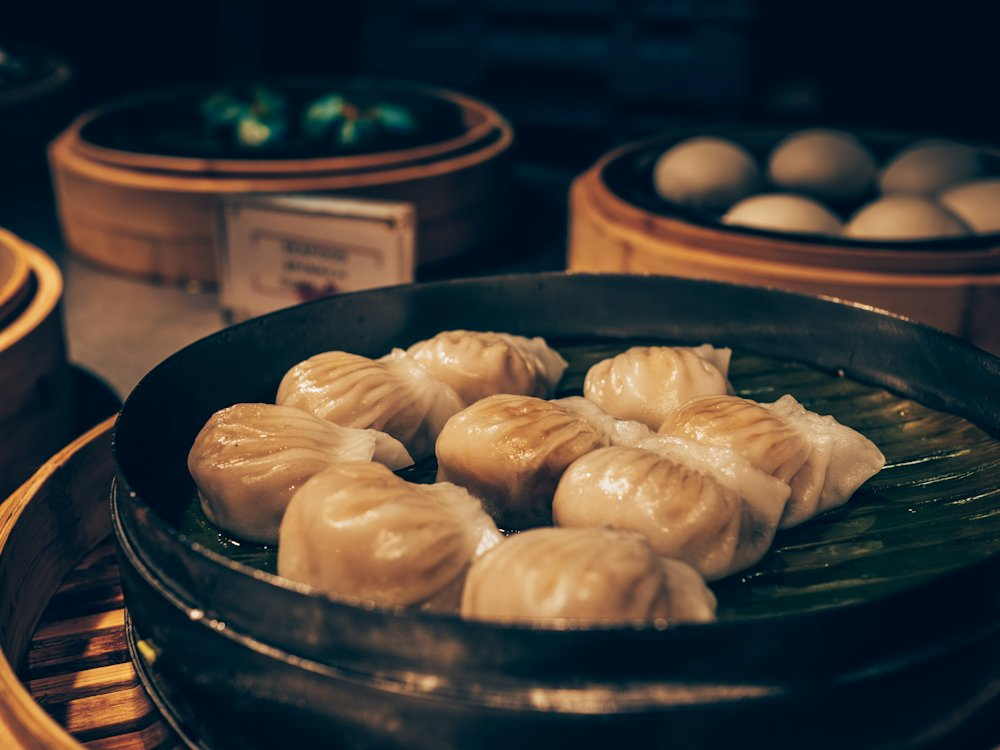

De Zhuang
Ресторан · Китайская, хого · Алматы
Рейтинг
★ 4.8
246 оценок
Год открытия
нет данных
в открытых источниках не нашли
Средний чек
15 000 ₸
по данным 2ГИС
Адрес и часы
📍 ул. Ескараева, 3, Алматы · Бостандыкский район
🕒 пн-вс 12:00-00:00
Удобства
О заведении
Ресторан китайской кухни с верандой.